3. 数据和函数的可视化¶
1． 已知椭圆的长、短轴$a=4,b=2$，用“小红点线”画如图所示的椭圆$\begin{cases}
x&=a \cos t \\
y&=b \sin t
\end{cases}$。（提示：参量$t$ ；点的大小； axis equal）
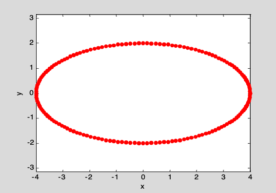
2． 根据表达式$\rho = 1-\cos \theta$ 绘制如图的心脏线。（提示：polar；注意title中特殊字符；线宽；axis square。可以用plot试试。）
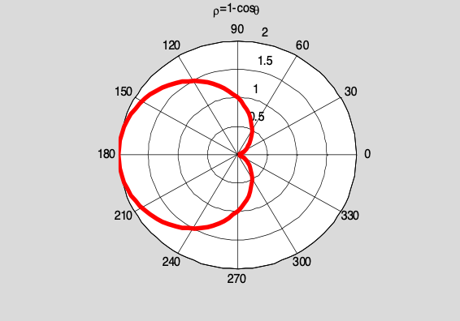
3． A,B,C三个城市上半年每个月的国民生产总值表。试画出如图所示的三城市上半年每月生产总值的累计直方图。（提示：bar(x,Y,'style'); colormap(cool); legend。）
表 各城市生产总值数据（单位：亿元）
| 城市 | 1月 | 2月 | 3月 | 4月 | 5月 | 6月 |
|---|---|---|---|---|---|---|
| A | 170 | 120 | 180 | 200 | 190 | 220 |
| B | 120 | 100 | 110 | 180 | 170 | 180 |
| C | 70 | 50 | 80 | 100 | 95 | 120 |
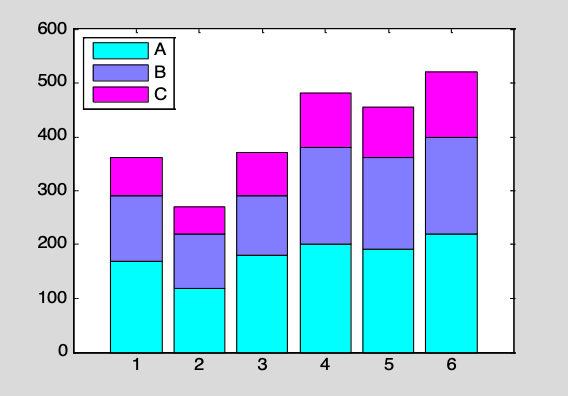
4． 二阶线性系统的归一化（即令 $\omega_n=1$）冲激响应可表示为：
，其中$\beta=\sqrt{|1-\xi^2|}$， $\xi$为阻尼系数。（1）希望在同一张图上，绘制$t\in [0,18]$区间内$\xi=0.2:0.2:1.4$不同取值时的各条曲线（参见下图）。在此图上，$\xi <1$的各条曲线为细蓝线； $\xi = 1$为粗黑线；$\xi>1$为细红线；并且对最上方及最下方的两条曲线给出$\xi=0.2$和$\xi=1.4$的醒目标志。（2）读者运行题下程序exmp504.m，可以发现该程序画出的曲线中没有“粗黑线”。你能讲出原因吗？如何对exmp504.m作最少的修改（比如只改一条指令），就可画出所需图形。（提示：该题深层次地暴露数值计算可能存在的隐患。）
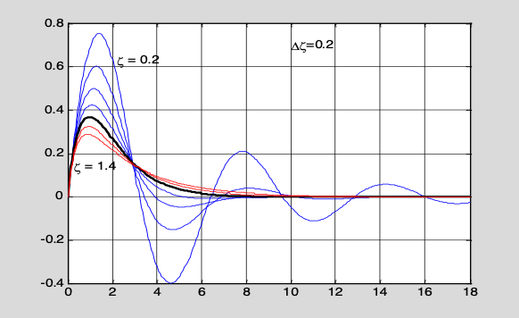
% exmp504.m 供第4道习题使用的程序
clc,clf,clear;
t=(0:0.05:18)';
N=length(t);
zeta=0.2:0.2:1.4;
L=length(zeta);
y=zeros(N,L);
hold on
for k=1:L
zk=zeta(k);
beta=sqrt(abs(1-zk^2));
if zk<1 %满足此条件，绘蓝色线
y=1/beta*exp(-zk*t).*sin(beta*t);
plot(t,y,'b')
if zk<0.4
text(2.2,0.63,'\zeta = 0.2')
end
elseif zk==1 %满足此条件，绘黑色线
y=t.*exp(-t);
plot(t,y,'k','LineWidth',2)
else %其余，绘红色线
y=(exp(-(zk-beta)*t)-exp(-(zk+beta)*t))/(2*beta);
plot(t,y,'r')
if zk>1.2
text(0.3,0.14,'\zeta = 1.4')
end
end
end
text(10,0.7,'\Delta\zeta=0.2')
axis([0,18,-0.4,0.8])
hold off
box on
grid on
5． 用绿实线绘制$x=\sin(t),y=\cos(t),z=t$的三维曲线，曲线如图所示。（提示：参变量；plot3；线色线粗。）
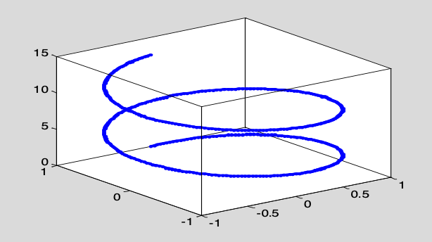
6． 采用两种不同方法绘制$z=4xe^{-x^2-y^2}$在$x,y\in [-3,3]$的如图的三维（透视）网格曲面。（提示：ezmesh; mesh; hidden）
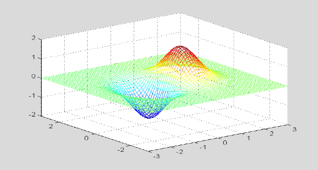
7． 在$x,y\in [-4\pi,4\pi]$区间里，根据表达式$z=\frac{\sin (x+y)}{x+y}$，绘制如图所示的曲面。（提示：NaN的处理）
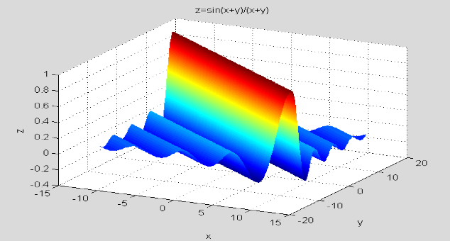
8． 试用图解法回答：
a) 方程组$\begin{cases}
\frac{y}{1+x^2+y^2}=0.1 \\
\sin(x+\cos(y))=0
\end{cases}$有多少个实数解？（提示：图解法; ezplot; ginput）
b) 求出离$x=0,y=0$最近、且满足该方程组的一个近似解。
9． 制作如文件prob509.p（在光盘的mfiles文件夹上）运行时那样的色图变幻（参见图p5-8）。（提示：[jet; flipud(jet)]; colormap; spinmap）
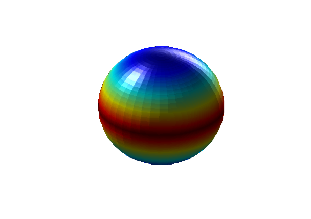
10． 在$[0,4\pi]$区间内，根据$y(t,x)=e^{-0.2x}\sin(\frac{\pi}{24}t - x)$，通过如图所示曲线表现“行波”。做题前，请先运行prob510.p文件，观察演示。（提示：采用实时动画；使用两个line对象；background擦除模式；使用pause控制动画速度。）
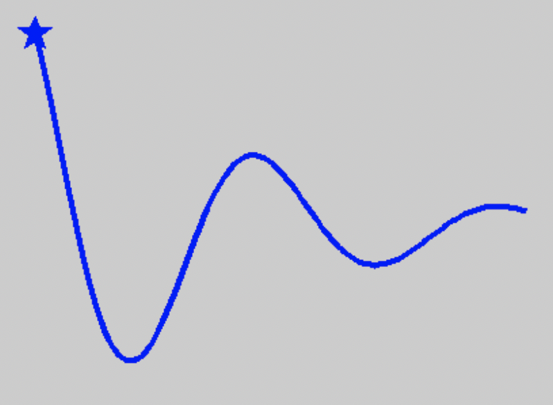
11． 利用影片动画法，据函数$f(x,t)=\sin(x)\sin(t)$制作如图所示驻波动画。在做题前，先运行prob511.p产生的演示动画。（提示：用2个line分别产生带图柄的线和点对象; 擦除模式为background; 用set通过线图柄操作线位置; getframe; movie）
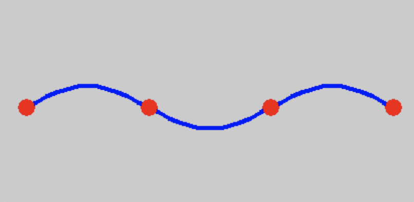
12． 编写使红色小球沿三叶线$\rho=\cos(3\theta)$运动的程序。具体参见演示程序prob512.p（在光盘的mfiles文件夹上）的运行实况。下图显示的是该动画中的一个静止图形。（提示：用参量方程表达三叶线；用line绘制线对象；用line创建红点的图柄，擦除模式用xor；用set操作红点坐标，构成动画；drawnow。）
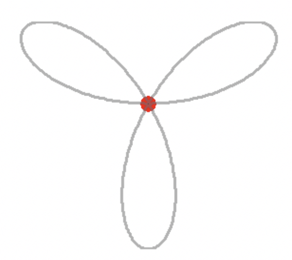